This project builds a small private web service on four MacBooks that share one Wi-Fi network. Nothing runs in the cloud.
A client types the private name app.nova.test. Our own DNS server on Mac 1 turns that name into the address of our edge server, Mac 2. The client then opens an HTTPS connection to Mac 2. nginx on Mac 2 handles the encryption and passes each request to one of two backend servers, Mac 3 and Mac 4, taking turns between them.
The application is kept very simple on purpose, because the network is the project. This report explains how each part was set up and shows the evidence that it works. All screenshots were taken on the running setup on 5 October 2026.
Section 2
Architecture
Figure 1. Network topology and request flow. All four Macs are on the same Wi-Fi LAN.
Machine
Role
Software
IP address
Port
Cloud equivalent
Mac 1
Private DNS server
dnsmasq 2.93
10.7.8.113
UDP 53
Managed DNS, such as AWS Route 53
Mac 2
Edge: reverse proxy, TLS, load balancer
nginx 1.31.6
10.7.7.58
TCP 443
Cloud load balancer, such as AWS ALB
Mac 3
Backend A
Node.js
10.7.19.171
TCP 3001
Application server, instance A
Mac 4
Backend B and test client
Node.js
10.7.20.75
TCP 3002
Application server, instance B
The client only ever talks to two machines: Mac 1 for the name lookup and Mac 2 for the web request. It never needs the backend addresses. Those are written only in the nginx configuration on Mac 2, so a backend can be added, removed or replaced without changing anything on the client.
Section 3
How one request travels
#
What happens
Protocol
Layer
1
The client asks Mac 1 for the address of app.nova.test. Mac 1 answers 10.7.7.58.
DNS (UDP 53)
Application
2
The client opens a TCP connection to 10.7.7.58 on port 443 with the three-way handshake: SYN, SYN-ACK, ACK.
TCP
Transport
3
Client and nginx do the TLS handshake. The client checks the certificate for app.nova.test.
TLS 1.3
Session / Transport
4
The client sends GET / inside the encrypted connection.
HTTP/1.1
Application
5
nginx decrypts the request, picks the next backend in turn and forwards the request as plain HTTP. The backend replies, and nginx sends the reply back to the client inside TLS.
HTTP (TCP 3001 / 3002)
Application
Below these steps, IPv4 carries the packets between the 10.7.x.x addresses (Network layer) and Wi-Fi carries the frames between MAC addresses (Link layer, shown by Wireshark as Ethernet II). DNS and the web connection are separate: DNS only finds the address, and the HTTPS connection then goes straight to that address without involving the DNS server.
Section 4 · Task A
Private LAN
All four Macs joined the same Wi-Fi network and received their addresses by DHCP. The network is 10.7.0.0/19 (subnet mask 255.255.224.0) and the default gateway is 10.7.0.1.
Machine
IPv4 address
Interface
MAC address
Mac 1
10.7.8.113
Wi-Fi
10:9f:41:ab:76:86
Mac 2
10.7.7.58
Wi-Fi (en0)
10:9f:41:c2:7f:dc
Mac 3
10.7.19.171
Wi-Fi (en0)
9a:b1:82:93:2e:f8
Mac 4
10.7.20.75
Wi-Fi (en0)
10:9f:41:c1:1d:ca
For Macs 1, 2 and 4 this is the hardware Wi-Fi address. macOS uses a private Wi-Fi address on the network, so the Ethernet addresses in the Wireshark captures are different. For example, Mac 4 appears there as 92:c6:88:82:88:05.
Every Mac can ping the others with 0% packet loss. The replies show ttl=64, which is the starting value, so no router sits between the machines: they are on the same LAN.
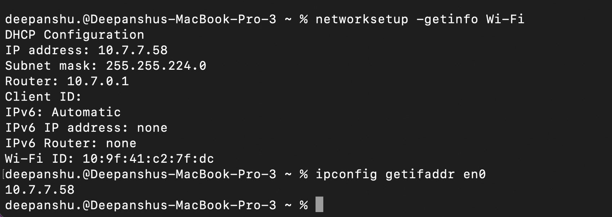
Figure 2. Address, subnet mask and gateway of Mac 2.
MAC_2/01_network_ip_config.png
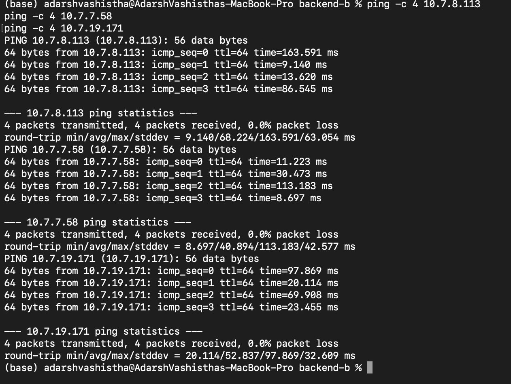
Figure 3. Mac 4 pings Mac 1, Mac 2 and Mac 3 with no loss.
MAC_4/evidence/02_lan_ping_reachability_all_macs.jpg
Section 5 · Task B
Private DNS server
Mac 1 runs dnsmasq, installed with Homebrew. Three lines in /opt/homebrew/etc/dnsmasq.conf do the work:
The first two lines create the records. Both names point to Mac 2. The third line makes dnsmasq listen on the Wi-Fi address, so that other Macs can ask it. Figure 4 shows dnsmasq listening on UDP port 53.
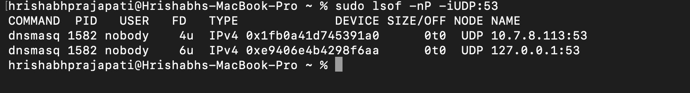
Figure 4. dnsmasq on Mac 1 listening on 10.7.8.113:53 and 127.0.0.1:53.
MAC_1/evidence/MAC1_SS04_DNSMASQ_RUNNING.png
The client Macs were then set to use 10.7.8.113 as their DNS server (in System Settings → Network → DNS, or with networksetup -setdnsservers). Mac 4 and Mac 2 both resolve the name through Mac 1:
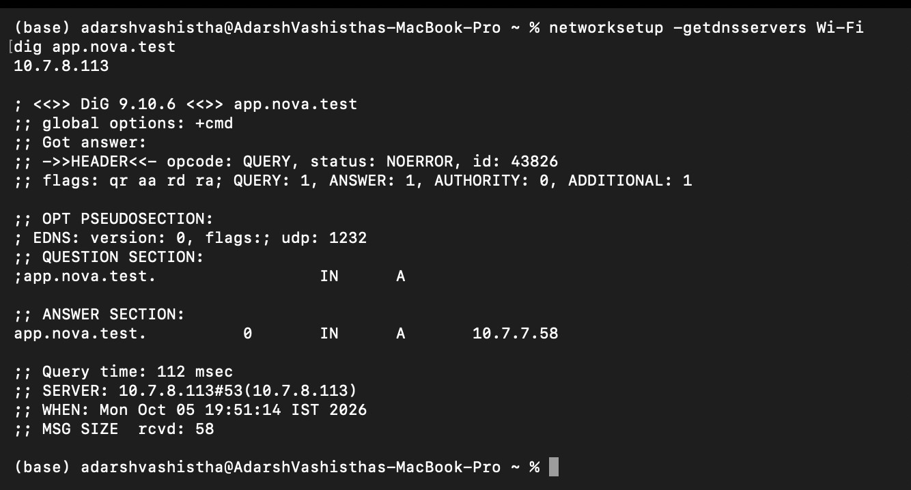
Figure 5. Mac 4: the DNS server is 10.7.8.113 and dig returns 10.7.7.58.
MAC_4/evidence/05_dns_dig_app_nova_test_success.png
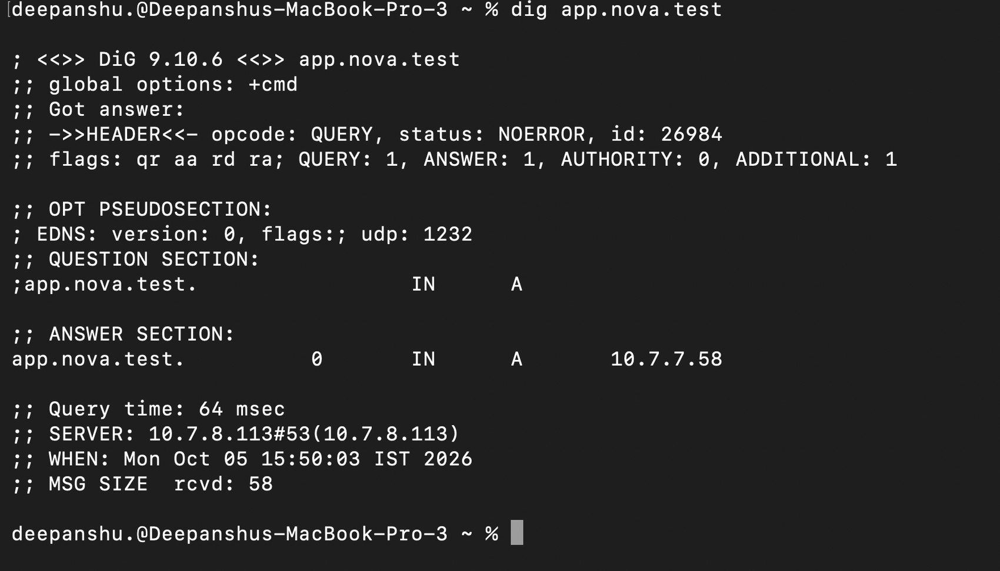
Figure 6. Mac 2: the same lookup, also answered by 10.7.8.113.
MAC_2/06_dns_dig_app_nova_test.png
How to read the dig output
status: NOERROR and the ANSWER SECTION give the address: app.nova.test → 10.7.7.58.
SERVER: 10.7.8.113#53 proves the answer came from our own DNS server, on port 53.
The aa flag means the server answered from its own records.
The TTL is 0. This is the dnsmasq default for records set in its config file. It tells clients not to cache the answer.
The service is always opened by name (https://app.nova.test), never by typing the IP address.
Section 6 · Task C
Two backend services
Each backend is a single Node.js file, server.js, that uses only built-in modules, so there is nothing to install. It is started with node server.js. Backend A runs on Mac 3 on port 3001. Backend B runs on Mac 4 on port 3002.
Endpoint
Response
Cache header
GET /
A short page that names the backend (HTML on A, JSON on B)
Cache-Control: public, max-age=60 and an ETag
GET /api/status
JSON with "backend": "A" or "B" and "status": "ok"
Cache-Control: no-store
Every response
The header X-Backend: A or X-Backend: B
Both servers listen on 0.0.0.0, which means every network interface. If they listened only on 127.0.0.1, other Macs could not reach them. In lsof this shows as *:3001 and *:3002.
Figure 7. Backend A listening on *:3001 (top) and Backend B on *:3002 (bottom).
MAC_3/evidence/mac-3_ss/Backend_A_listening_on_port_3001_not_127001.jpeg · MAC_4/evidence/03_backend_b_port_3002_listen.jpgFigure 8. Backend A: / and /api/status both return 200 with X-Backend: A.
MAC_3/evidence/mac-3_ss/both_endpoints_return_200_with_X-Backend_A.jpeg
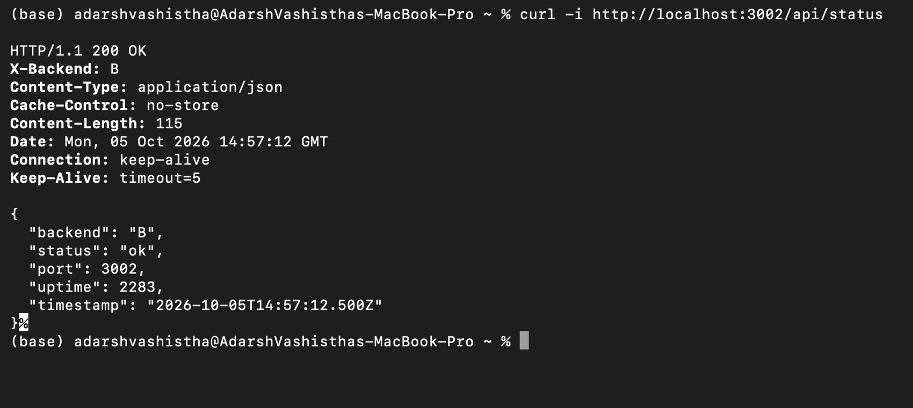
Figure 9. Backend B: /api/status returns 200 with X-Backend: B.
MAC_4/evidence/04_backend_b_local_status_curl.png
Each backend also logs who connected. Requests that arrive through the edge are logged with the address 10.7.7.58 (Mac 2), not the client's address, because nginx opens its own connection to the backend.
Section 7 · Task D
Reverse proxy and load balancer
Mac 2 runs nginx and is the single entry point. Clients connect only to Mac 2. nginx forwards each request to a backend and returns the answer. The main part of nginx/nova.conf is:
upstream lists the two backends. With no other setting, nginx uses round robin: one request goes to one backend, the next request to the other.
proxy_pass sends the request to that group over plain HTTP.
The proxy_set_header lines tell the backend the original host name, client address and protocol.
The file also has a second server block that listens on port 8080 without TLS and forwards to the same backends.
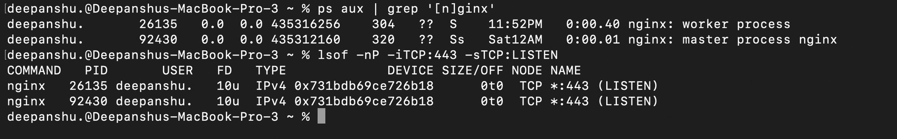
Figure 10. nginx running on Mac 2 and listening on TCP port 443.
MAC_2/05_nginx_process_and_port_443.pngFigure 11. Six requests from Mac 4 to https://app.nova.test/. The X-Backend header alternates B, A, B, A, B, A.
MAC_4/evidence/07_load_balancing_round_robin_alternation.jpg
Section 8 · Task E
HTTPS and TLS
TLS ends at nginx. This is called TLS termination. The link from the client to Mac 2 is encrypted. The link from Mac 2 to the backends is plain HTTP inside the LAN.
Item
Value
Issued by
A local certificate authority (CA) created with mkcert on Mac 2
Certificate name
app.nova.test (in the Subject Alternative Name field)
Valid
2 October 2026 to 2 January 2029
Key
RSA 2048-bit, signed with SHA-256
In the repository
Only the public CA certificate, MAC_2/certs/mkcert-rootCA.crt. Private keys are never committed.
A client accepts the certificate only if it trusts the CA that signed it. On macOS the public CA certificate is added to the System keychain with:
Figure 12 shows the result on Mac 4. The certificate is checked and accepted, and curl is run without the -k flag. Mac 2 was tested the same way and also reports “SSL certificate verify ok”.
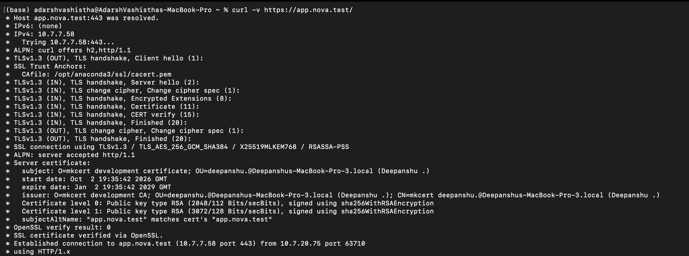
Figure 12.curl -v https://app.nova.test/ from Mac 4: TLS 1.3 handshake, certificate name match and successful verification. On Mac 4, curl is the Anaconda build and checks certificates against its own CA file.
MAC_4/evidence/06_https_curl_v_success.png
The TLS handshake in simple steps
Client Hello. The client lists the TLS versions and ciphers it supports and names the site it wants.
Server Hello. The server picks TLS 1.3 and the cipher TLS_AES_256_GCM_SHA384.
Certificate. The server sends its certificate and proves it holds the matching private key.
Key exchange. Both sides work out the same secret key (method X25519MLKEM768). In TLS 1.3 the key shares travel inside the two Hello messages.
Finished. Both sides confirm that the handshake was not changed on the way. After this, HTTP is sent encrypted.
The line “ALPN: server accepted http/1.1” shows that the connection uses HTTP/1.1. HTTP/2 is not switched on in nginx.
Section 9 · Task F
HTTP caching
The page at / does not change, so both backends allow it to be cached for 60 seconds and give it an ETag. The ETag is a fingerprint (SHA-1 hash) of the page body. The /api/status endpoint is live data, so it is marked no-store and is never cached.
Case
When
What happens
Fresh cache hit
The client has a copy younger than 60 seconds
The client uses its own copy. No request is sent.
Conditional request
The copy is older than 60 seconds
The client sends the ETag in If-None-Match. If the page is the same, the server answers 304 Not Modified with no body.
Full request
There is no copy, or the ETag does not match
The server answers 200 OK with the whole page.
nginx passes these headers through unchanged. nginx does not keep a cache itself in our setup: the caching happens on the client. We used curl, which keeps no cache, so the figures show the conditional request and the full request.
Figure 13.curl -sI through the edge: both backends send Cache-Control: public, max-age=60 and an ETag.
MAC_2/09_http_response_headers_and_etag.png
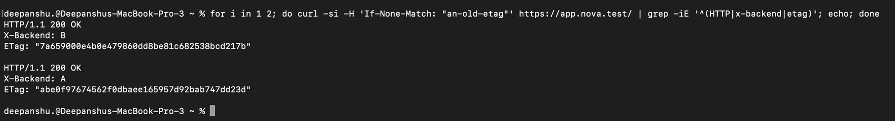
Figure 14. Full request: an old ETag does not match, so both backends answer 200 OK.
MAC_2/11_etag_cache_revalidation_200.png
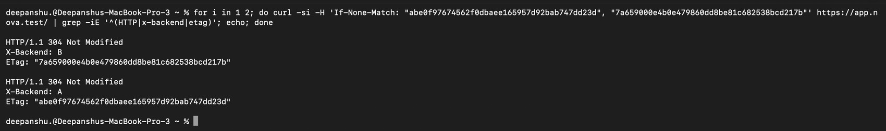
Figure 15. Conditional request: the ETags match, so both backends answer 304 Not Modified.
MAC_2/12_etag_cache_validation_304_not_modified.png
The two backends return different pages for /, so each has its own ETag. A conditional request gets 304 only from the backend that issued the ETag. In Figure 15 the request carries both ETags, so both backends answer 304.
Section 10 · Task G
Packet capture of the complete flow
The captures below were taken with Wireshark on Mac 4, the client, on its Wi-Fi interface en0.
DNS
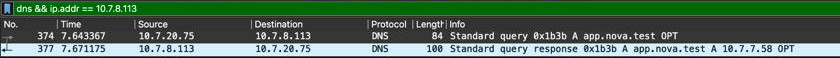
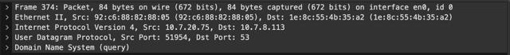
Figure 16. DNS query and response, with the layers of the query packet below.
MAC_4/evidence/11_wireshark_dns_query_response.jpeg
In frame 374, Mac 4 (10.7.20.75, source port 51954) asks Mac 1 (10.7.8.113, UDP port 53) for the A record of app.nova.test. In frame 377, about 28 ms later, Mac 1 answers 10.7.7.58.
TCP three-way handshake
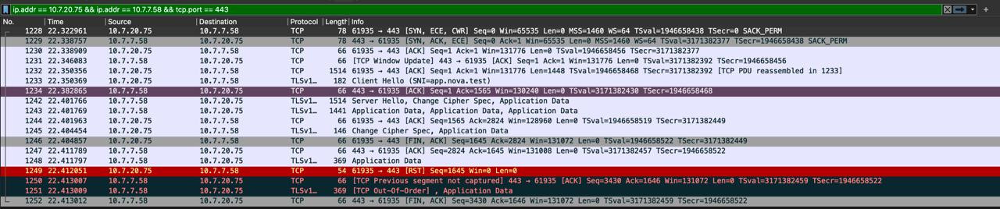
Figure 17. The connection from Mac 4 (port 61935) to Mac 2 (port 443).
MAC_4/evidence/12_wireshark_tcp_3way_handshake.jpeg
Frame 1228 is the client's SYN, frame 1229 is the server's SYN-ACK and frame 1230 is the client's ACK. Only after these three packets does the client send data: the TLS Client Hello (frames 1232 and 1233). The extra ECE and CWR flags on the SYN packets only offer congestion notification.
Sequence and acknowledgement numbers. Wireshark shows them counted from 0. Each side numbers every byte it sends. The Ack number is the next byte the receiver expects. For example, the Client Hello is 1,564 bytes long, and the server replies with Ack=1565 (frame 1234). If an acknowledgement does not arrive, the sender sends the data again. This is how TCP delivers data reliably. The Win value is the receive window: it tells the sender how much more data the receiver can take, which is flow control.
TLS handshake
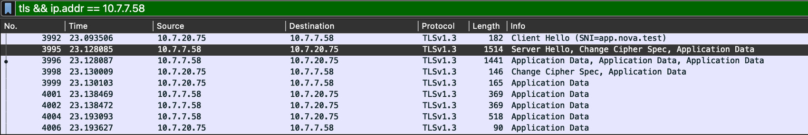
Figure 18. TLS packets of a second connection (client port 63782): Client Hello, Server Hello, Change Cipher Spec, then only “Application Data”.
MAC_4/evidence/13b_wireshark_tls_server_hello_cipher.png
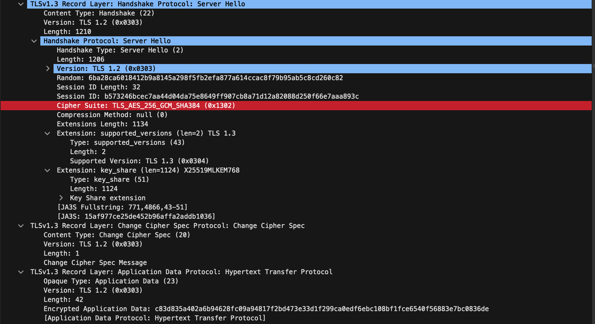
Figure 19. Inside the Server Hello: cipher suite TLS_AES_256_GCM_SHA384, version TLS 1.3 and key share X25519MLKEM768, followed by Change Cipher Spec and encrypted data.
MAC_4/evidence/13b_wireshark_tls_server_hello_cipher.png
The Client Hello shows the site name app.nova.test (SNI) in clear text.
The line “Version: TLS 1.2” is only a compatibility value. The real version is in the supported_versions field: TLS 1.3.
After the Server Hello, apart from the Change Cipher Spec marker, everything appears as “Application Data”. In TLS 1.3 this includes the certificate, and also the HTTP request and response. Wireshark cannot read them because they are encrypted with a key that only the client and nginx know. The HTTP headers can be seen only at the two ends, for example with curl -v (Figure 12).
Ports
Traffic
Client port (temporary)
Server port (fixed)
Transport
DNS query, Mac 4 → Mac 1
51954
53
UDP
HTTPS, Mac 4 → Mac 2 (Figure 17)
61935
443
TCP
HTTPS, Mac 4 → Mac 2 (Figure 18)
63782
443
TCP
HTTP, Mac 2 → Backend A / Backend B
chosen by Mac 2
3001 / 3002
TCP
The client's operating system picks a new temporary (ephemeral) port for every connection. The server port is fixed and well known. The pair 10.7.20.75:61935 and 10.7.7.58:443 identifies exactly one connection.
Saved capture files: MAC_4/evidence/wireshark_tls.pcapng (TCP handshake, TLS handshake and connection close for the 63782 → 443 connection) and MAC_1/wireshark_dns.pcapng (a DNS query for app.nova.test captured on Mac 1).
Section 11
Failure demonstrations
We broke the setup on purpose to see which layer fails and which layers keep working. After each test the original setting was restored and checked again.
1. Wrong DNS server on the client
Mac 4 was changed to use the public DNS server 8.8.8.8 instead of Mac 1. The public server does not know the private name, so dig returns NXDOMAIN and curl stops with “Could not resolve host”. Yet ping 10.7.7.58 still works. Name lookup failed, but the machines can still reach each other by IP address: DNS and IP are independent.
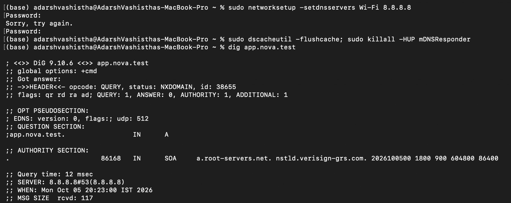
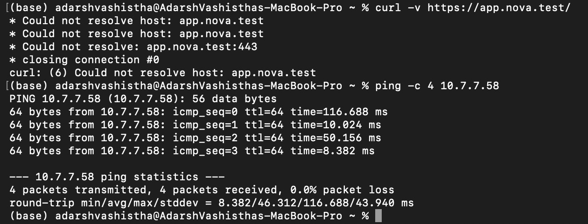
Figure 20. Mac 4 with DNS set to 8.8.8.8: the lookup fails (left); curl fails, but ping to Mac 2 succeeds (right).
MAC_4/evidence/16_failure_dns_2_broken.png
2. DNS record points to a wrong IP address
On Mac 1 the record for app.nova.test was changed from 10.7.7.58 to 10.7.20.99 and dnsmasq was restarted. DNS still answers without any error (NOERROR), but it now gives the wrong address. Mac 2 is still running and still answers ping on 10.7.7.58. DNS is only a directory: it does not check that the address it gives is the right one.
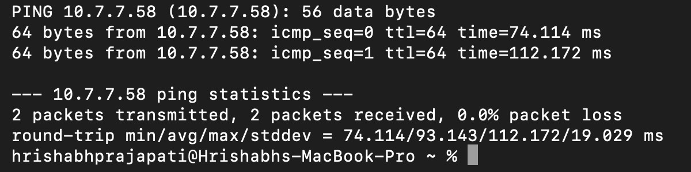
Figure 21. Mac 1 after the change: DNS returns 10.7.20.99 (left), while Mac 2 on 10.7.7.58 still answers ping (right).
MAC_1/evidence/MAC1_SS08_WRONG_DNS_RECORD.png
3 to 5. Remaining scenarios
Screenshots for these three scenarios have not been captured yet. The table gives the expected result, based on how nginx and TCP work. They will be shown on the live system.
Scenario
Expected result
One backend is stopped
nginx cannot connect to the stopped backend and sends the request to the other one. The client still gets 200 OK, always with the same X-Backend value: the edge hides the failure.
Both backends are stopped
DNS, TCP and TLS to Mac 2 still work, but nginx has no backend to use and returns 502 Bad Gateway. This shows where the edge ends and the backend begins.
Wrong destination port on the client
Mac 2 still answers ping, but a TCP connection to a port where nothing listens is refused or times out. An IP address and a port are separate identifiers.
Section 12
Summary and next steps
The Phase 1 goal is met: a client resolves app.nova.test through our own DNS server, connects over HTTPS without a certificate warning, and receives answers from both backends through the load balancer.
Task
Result
Evidence
A · LAN
Four Macs on one Wi-Fi LAN, every pair reachable by ping
Figures 2, 3
B · DNS
app.nova.test and api.nova.test resolve to 10.7.7.58 through Mac 1; two client Macs use it
Figures 4 to 6
C · Backends
Two REST backends on ports 3001 and 3002, each marked with X-Backend
Figures 7 to 9
D · Load balancer
nginx reverse proxy with round robin; requests alternate between A and B
Figures 10, 11
E · HTTPS
TLS 1.3 terminated at nginx; certificate verified without -k
Figure 12
F · Caching
Cache-Control, ETag and 304 Not Modified shown through the edge
Figures 13 to 15
G · Packets
DNS, TCP handshake and TLS handshake captured; ports identified
Figures 16 to 19
Failure tests
Two of five scenarios captured; three still to be shown on the live system
Figures 20, 21
Notes and limits
Addresses come from DHCP and can change. Mac 3 moved from 10.7.2.229 to 10.7.19.171 between 2 and 5 October, and the nginx upstream had to be updated.
The connection uses HTTP/1.1. HTTP/2 is not enabled in nginx, and HTTP/3 was not used.
api.nova.test resolves to Mac 2, but the certificate and the nginx server name cover only app.nova.test. The service is therefore used through app.nova.test.
Mac 1 (DNS) and Mac 2 (edge) are each a single point of failure. If either stops, the service cannot be reached.
Next: Phase 2
Phase 2 extends the same setup: a backup DNS server, a short DNS TTL with a controlled record change, firewall rules so that only Mac 2 can reach the backend ports, backend failover, and moving the edge to a standby machine through DNS.
Where to find things
The project repository holds the configuration files (MAC_1/dnsmasq.conf, nginx/nova.conf), the TLS setup notes (MAC_2/tls/), both backend sources (MAC_3/Backend_A/, MAC_4/Backend_B/) and all evidence, one folder per machine. README.md gives the commands to start every part. Tools used: Homebrew, dnsmasq, nginx, mkcert, Node.js, curl, dig and Wireshark.